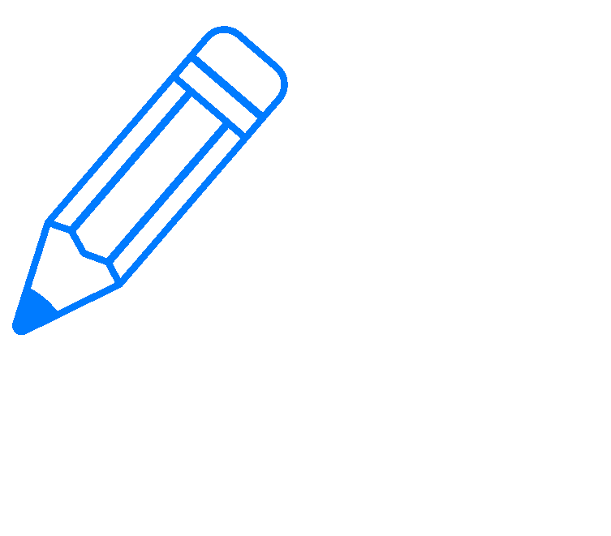

Hello! I am Josie

A multidisciplinary UX/UI designer merging graphic design with UX research to create high-impact digital experiences.

A multidisciplinary UX/UI designer merging graphic design with UX research to create high-impact digital experiences.